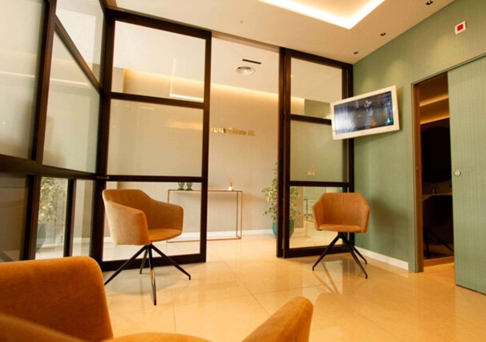
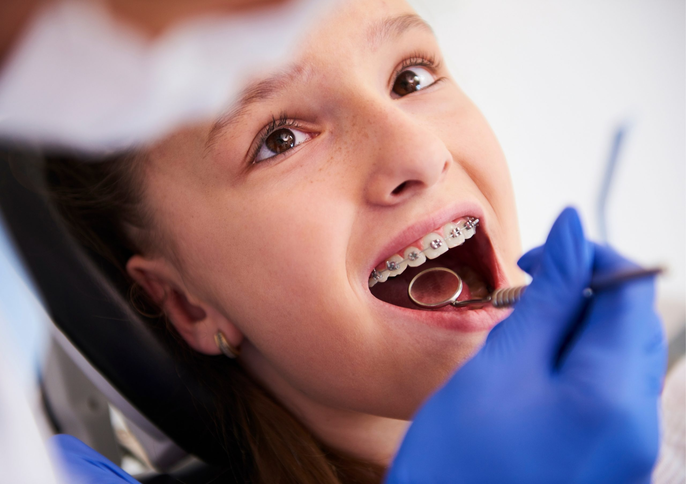

+20 Años de experiencia
Filosofía basada en la confianza, la profesionalidad y el trato individualizado según la necesidad de cada persona.
Ubicados en Los Cristianos – Tenerife
En el año 1999 se abre al público la CLÍNICA DENTAL GUAYERO en Los Cristianos, ampliando así la escasa oferta sanitaria y bucal que se ofrece en la comarca por aquel entonces. Desde el primer momento, la Dra. Ana Ruth Oliva tiene muy claro que su objetivo en su desarrollo profesional no es otro que mejorar la calidad de vida de sus conciudadanos a través de la mejora de su salud bucodental.
Inicialmente la Clínica se localiza en el Local 7 del conocido edificio de apartamentos Guayero de Los Cristianos, y posteriormente en el año 2002, la Clínica se amplía con el Local 8 colindante. Desde entonces contamos con tres gabinetes dentales, dos salas de espera, una oficina, un despacho, tres baños (uno de ellos para minusválidos) y almacén. Recientemente hemos adquirido el Local 9, que servirá para ampliar nuestras instalaciones en un futuro cercano, con objeto de mejorar nuestros servicios a los pacientes.


La asistencia sanitaria que desde el primer momento se basa en atender a los pacientes por parte de una persona muy bien formada en el ámbito bucodental que es natural de la isla, que vive y convive con sus vecinos de la comarca, residiendo en la localidad desde varios años antes de la apertura de la clínica hasta la actualidad, y que cumple todos los requisitos que la legislación exige para ejercer una profesión sanitaria.
La situación de la clínica permite que los pacientes puedan acceder cómodamente con sus vehículos al aparcamiento del edificio, pudiendo aparcar en el exterior de la clínica, con la comodidad que ello supone para los usuarios. Además, y en consonancia con su cómodo acceso, la clínica está habilitada para el acceso a minusválidos a sus dependencias, facilitando la atención sanitaria a este colectivo de pacientes.
Desde la apertura de la Clínica, gran parte de nuestros esfuerzos se han volcado en atender las necesidades bucodentales de todos los niños de la comarca e incluso de otras partes de la isla así como de La Gomera, El Hierro y La Palma, aprovechando las comunicaciones marítimas con las que cuenta nuestra localidad.
En la Clínica Dental Guayero atendemos a todos los niños de todas las edades y con todo tipo de necesidades. Este hecho lo avalan la gran cantidad de niños atendidos estos años. Nos preocupa mejorar sus hábitos de higiene bucodentales, atender las dolencias leves o graves que puedan surgir y corregir la posición de los dientes, ayudándoles así a mejorar su autoestima y poniendo un granito de arena en su futuro como adultos felices.
Los integrantes de la Clínica tienen gran experiencia en el tratamiento de niños, y es un lugar donde todos quieren volver sin ningún tipo de miedos.



Filosofía basada en la confianza, la profesionalidad y el trato individualizado según la necesidad de cada persona.
Además de un gran equipo médico y humano, nuestros centros disponen de la más alta tecnología para ofrecer la máxima calidad.
Nuestras instalaciones son modernas y cómodas, adaptadas para todo tipo de minusválidos, por eso todas nuestras clínicas están a pie de calle.
Si desea más información sobre nuestros servicios o solicitar una cita, póngase en contacto con nosotros.
info@clinicadentalguayero.es
Avda. Juan Carlos I, 26
Edificio Guayero, Locales 7, 8 y 9
38650 Los Cristianos
Lunes a Viernes de 10:00-19:00h